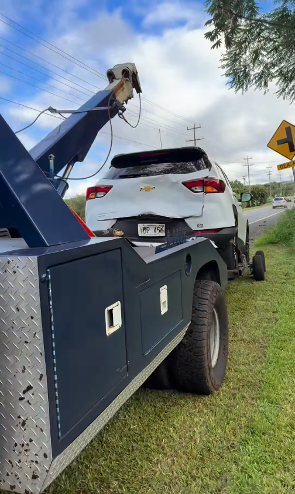
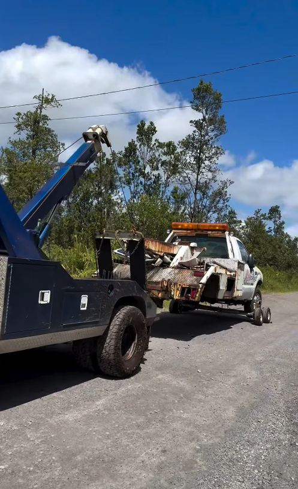
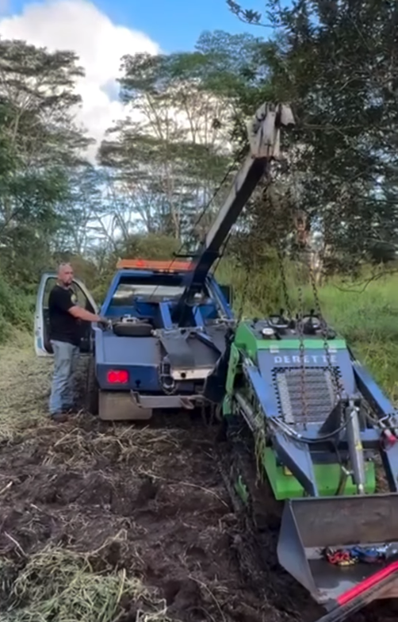
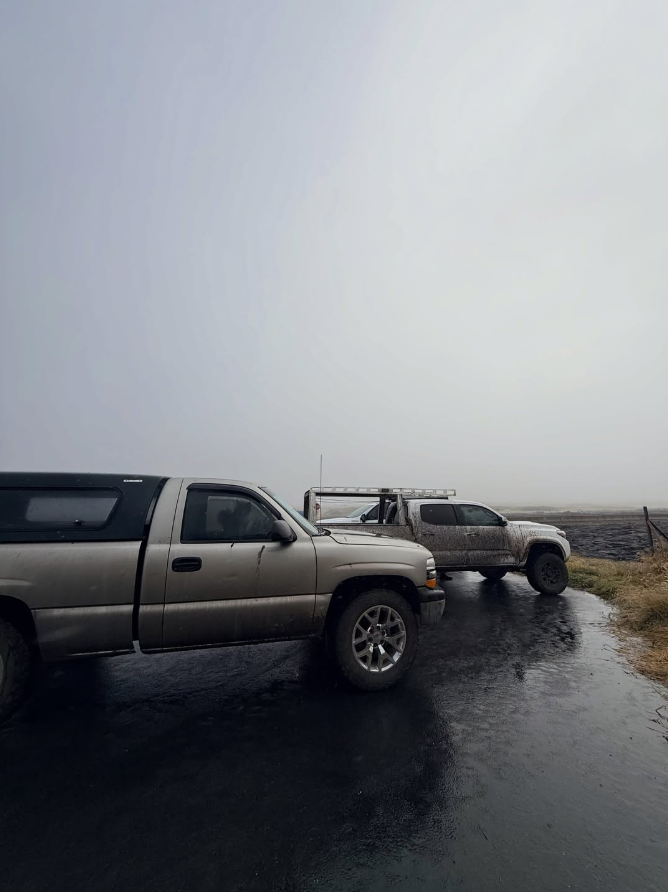

Built for any terrain.
Towing, recovery, hauling and off-road rescue across Hawaiʻi Island. From the highway to mud, trails and rough property access, call Little Tows when you need a way out.
More than a tow truck.
Roadside problems are only part of the work. Little Tows handles recovery, hauling, cleanup and truck projects built around real Big Island conditions.
Towing & Recovery
Vehicle towing and recovery for breakdowns, disabled vehicles and difficult situations across Hawaiʻi Island.
Winch Outs
Recovery when a vehicle is stuck in mud, grass, a shoulder, uneven ground or another difficult position.
Off-Road Rescue
Recovery built for trails, rough access roads, muddy property and terrain where ordinary roadside towing may not be enough.
Flood Recovery
Vehicle recovery support after flooding or when wet, soft ground leaves a vehicle stranded.
Hauling
Transport support for vehicles, trucks, SUVs and equipment across the Big Island.
Trucks, SUVs & Equipment
Towing and transport for larger personal vehicles and equipment, subject to job requirements and safe capacity.
Property Clean Outs
Hauling support for property cleanups, including removal jobs that need a truck and trailer.
Rubbish Removal
Junk and rubbish hauling to help clear unwanted material from homes, lots and properties.
Motor Installs
Mechanical installation work for motor replacement projects. Call with the vehicle details to discuss the job.
Transmission Installs
Transmission installation service. Call with the year, make, model and project details for availability.
Lift Kits & Suspension
Lift kit and suspension installation for truck and off-road builds. Call to discuss your vehicle and parts.
When the road runs out.
Actual recovery work from Little Tows — roadside, rural and off pavement.




Big Island service areas.
Island-wide service with dedicated local pages for the communities and regions Little Tows serves.